DEAMON Tools 4.30.0305
Рисунок 1 - DEAMON Tools Lite
DAEMON Tools – это популярное программное обеспечение, которое позволит вам монтировать образы и навести порядок среди ваших медиафайлов. Существует две версии: бесплатная Light и премиум Pro, но они мало отличаются по функционалу. Программа умеет обрабатывать практически все форматы и позволяет открыть даже защищенные файлы. Вы можете использовать Daemon Tools для воспроизведения FLAC или APE, обработки VHD, распаковки архивов и преобразования разных форматов.
Процесс установки прост, скачиваем, принимаем соглашение и приступаем к работе.
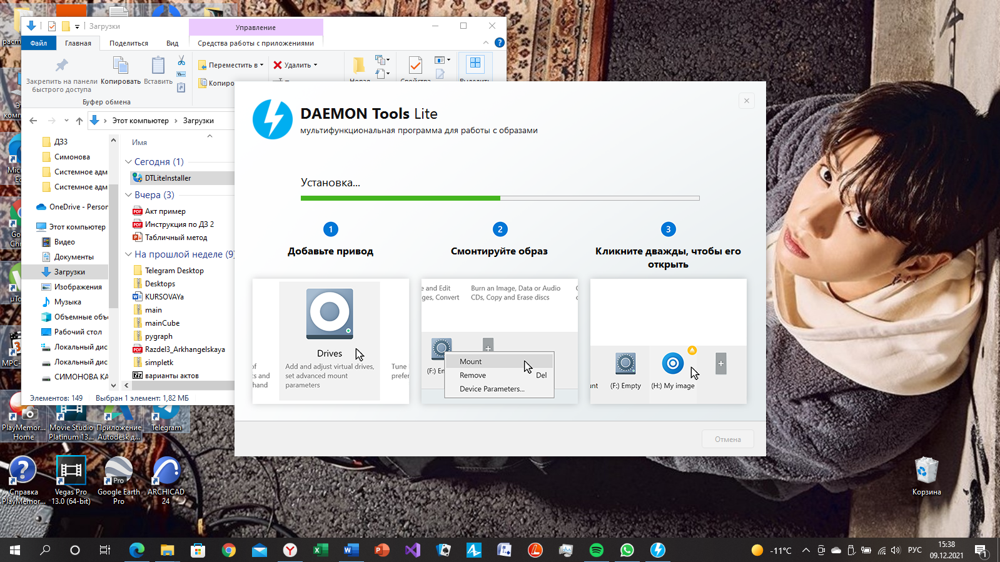Рисунок 2 - Процесс установки
Для новых пользователей при начале работы появляется небольшая инструкция о том, как пользоваться прораммой и что входит в ее функционал.
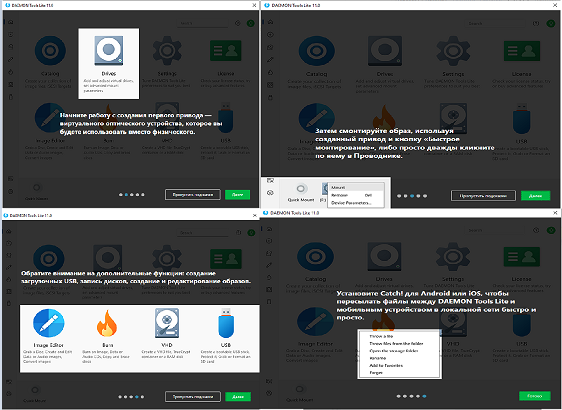Рисунок 2 - Инструктаж по работе в программе
Так как лицензия на эту программу платная, я взяла пробный период, поэтому ряд функций мне не доступен, но будем пользоваться тем, что есть.
Для начала рассмотрим, из чего состоит приложение.
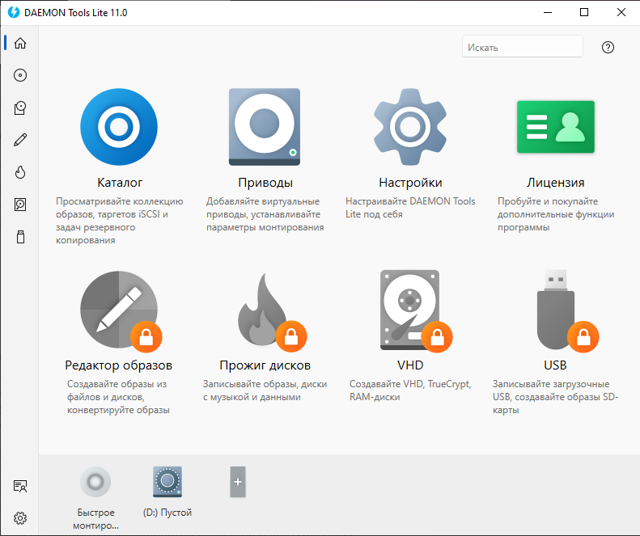Рисунок 3 - Интерфейс DEAMON Tools Lite
Вкладки:
1. Вкладка "Каталог"-здесь хранятся все созданные нами образы.
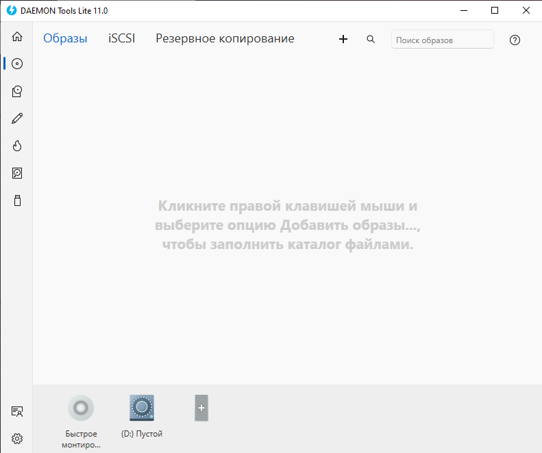Рисунок 4 - Вкладка "Каталог"
2. Вкладка "Приводы"-здесь мы можем увеличивать число виртуальных устройств и редактировать необходимое количество образов. На рисунке 6 показан состав функции "Добавить привод".
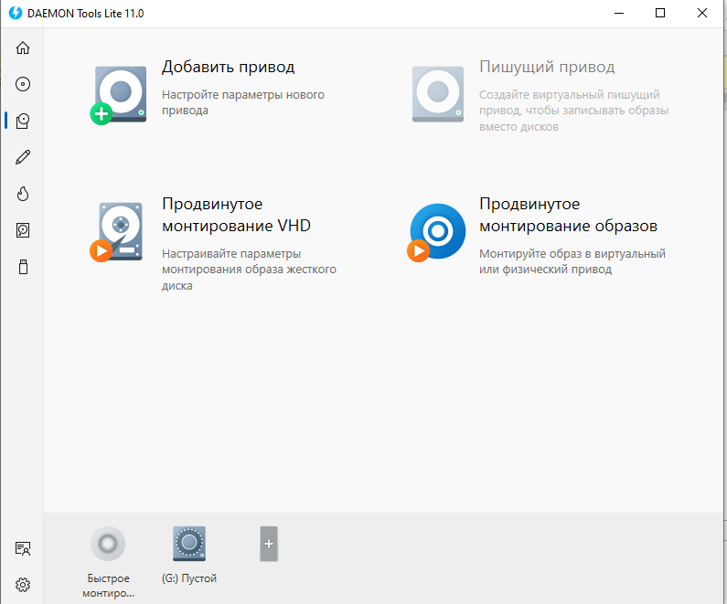Рисунок 5 - Вкладка "Приводы"
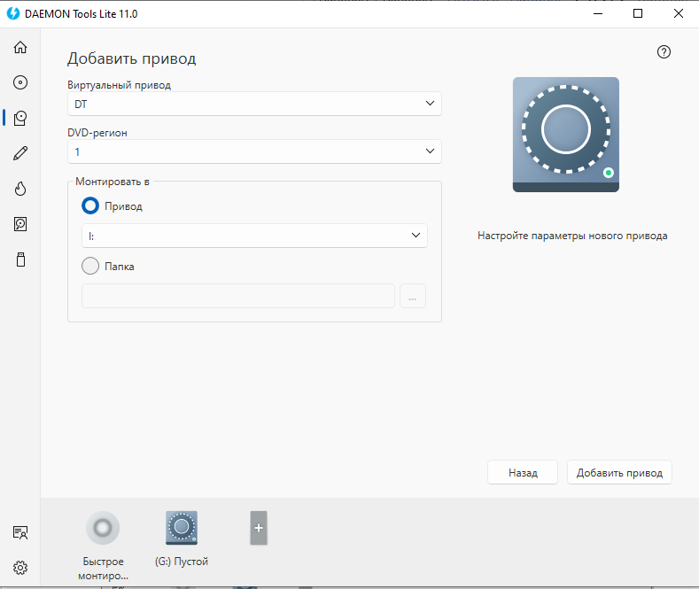Рисунок 6 - Функция "Добавить привод"
3. Вкладка "Редактор образов"-название говорит само за себя. На этой вкладке мы создаем и редактируем образы, которые создаются из реальных дисков вашего ПК. Программа сама создаст виртуальный диск в формате ISO или в любом другом, удобном вам.
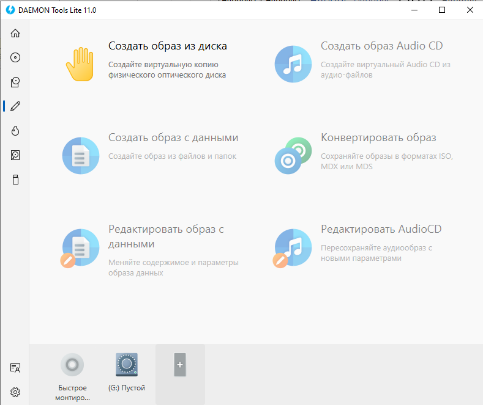Рисунок 7 - Вкладка "Редактор образов"
4. Вкладка "Прожиг дисков"-раздел приложения, где виртуальные диски мы превращаем в реальные. К сожалению, этот функционал не доступен в Lite-версии, поэтому поработать в ней мне не удалось.
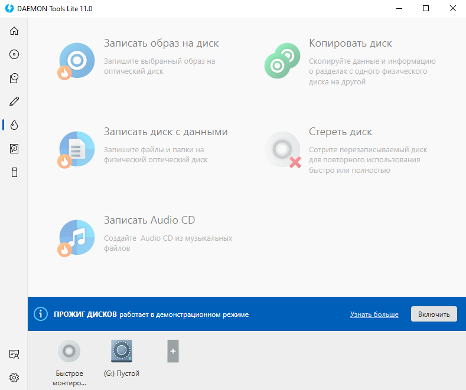Рисунок 8 - Вкладка "Прожиг дисков"
5. Вкладка "VHD"-посмотрев ее состав, можно понять, что Deamon Tools позволяет создавать, редактировать и использовать VHD в качестве обычного жесткого диска. По мне, эта функция одна из самых полезных в программе, но, опять же, недоступная в пробной лицензии приложения.
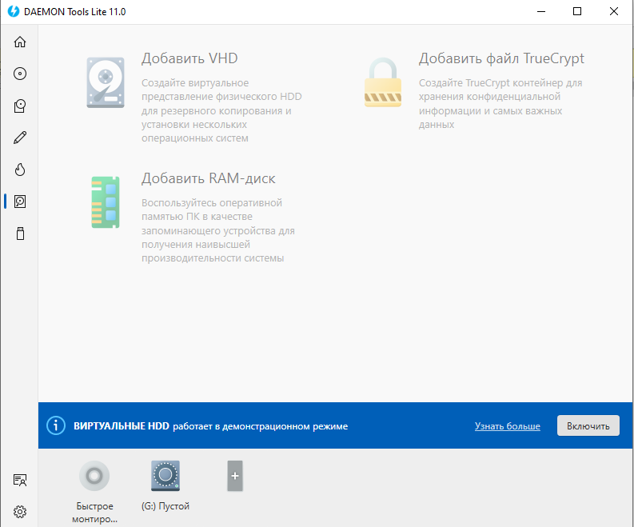Рисунок 9 - Вкладка "VHD"
6. Вкладка "USB"-последняя, но не по значимости. Здесь мы можем создать загрузочную флэшку, защитить ее, создать образ и форматировать. Удобно и просто, наверное, если б можно было ее использовать не только в PRO (платной) версии DEAMON Tools.
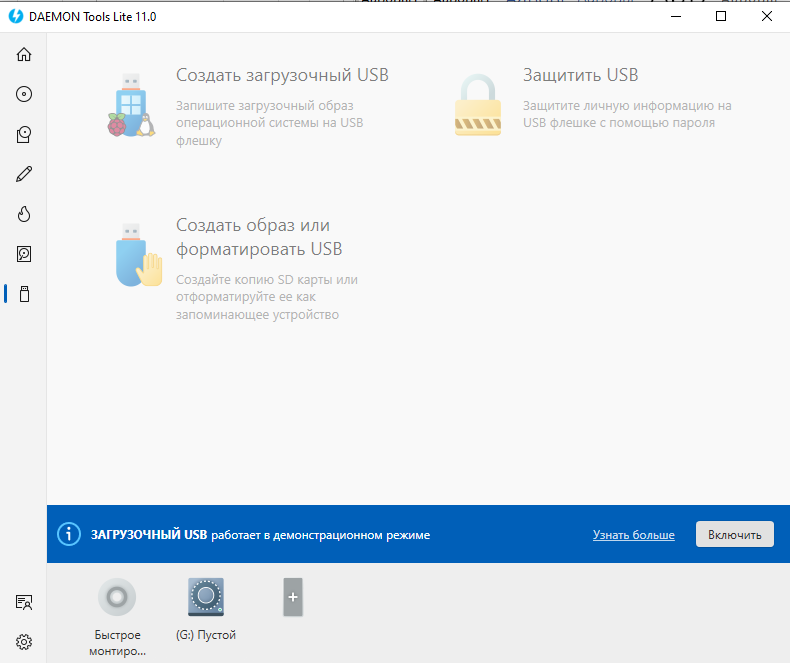Рисунок 10 - Вкладка "USB"
Теперь попробуем воспользоваться одной из функций. Я решила опробовать «Создание образа из диска». Как она работает?
1. В окне «Привод» выбираем диск, из которого и будет создавать образ;
2. Выбираем расположение файла и формат (MDX);
3. (Необязательно) Если нужно защитить файл, нажимаем на галочку «Защитить», вводим пароль и подтверждаем его повторным вводом;
4. Нажимаем на «Старт» и дожидаемся завершения процесса создания образа.
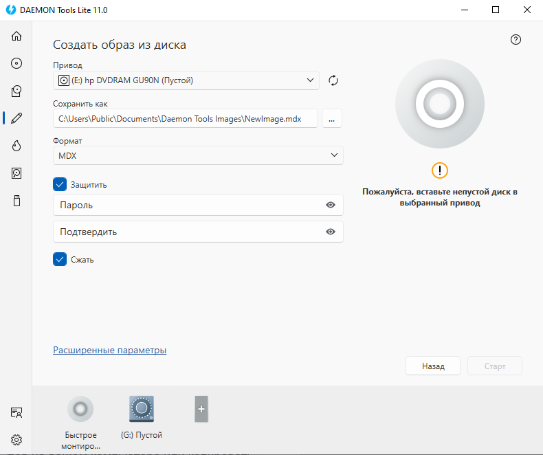Рисунок 11 - Создание образа из диска
К сожалению, свободного носителя у меня не оказалось, поэтому итог работы программы показать не удастся, но почитав отзывы пользователей на различных форумах, я могу сделать вывод, что программа даст вам ожидаемый результат.
Плюсы:
Минусы:
Исходя из всего вышесказанного, могу сделать вывод о том, что приложение DEAMON Tools Lite определенно достойно внимания. Программа проста в использовании и не требует никаких сложных настроек. Как по мне, ее главный минус-это платная лицензия. При работе в пробной версии постоянно вылезающая реклама крайне раздражительна, что приводит к расфокусировке внимания. Тем не менее, если у вас есть лишних 5.99$, вы точно будете довольны работой в данной программе.